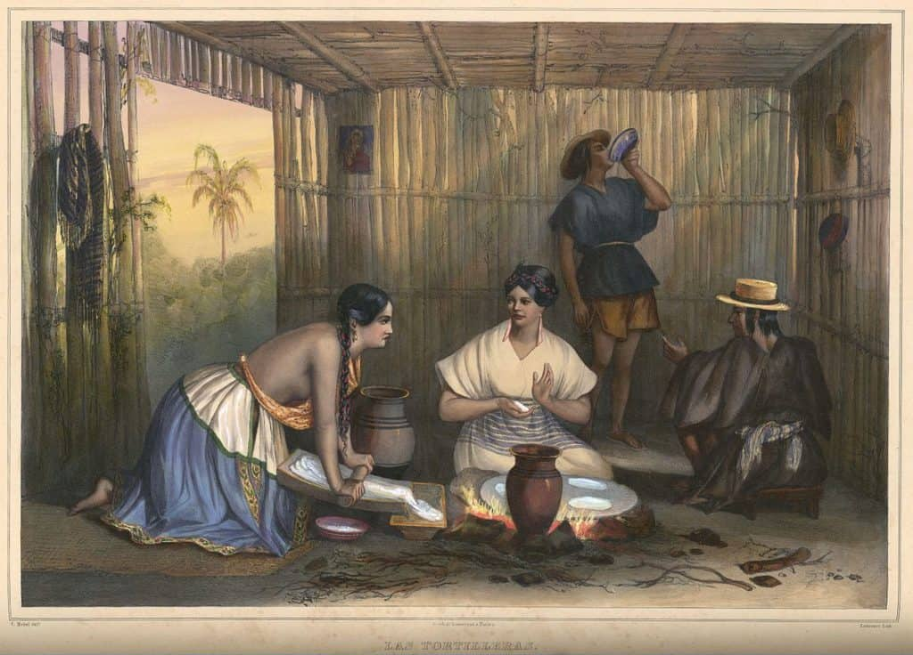

History of tacos
Introduction of Tacos: Tacos, a ubiquitous and beloved dish, have woven themselves into the fabric of Mexican culinary heritage and beyond. The evolution of tacos is a fascinating journey that traverses centuries, reflecting the diverse cultural influences and gastronomic innovations that have shaped this iconic food. From humble beginnings in indigenous communities to international acclaim, the history of tacos is a testament to the enduring appeal of simple yet delicious cuisine.
Historical Roots on Tacos: The roots of tacos can be traced back to ancient Mexico, where indigenous peoples, particularly the Aztecs, are believed to have indulged in variations of the dish. Early renditions involved tortillas filled with small fish, providing sustenance to communities nestled in the heart of the Mexican landscape. The term "taco" itself originates from the Nahuatl language spoken by the Aztecs, highlighting the deep indigenous connection to this culinary creation.
Evolution and Innovation of Tacos: As time progressed, tacos evolved alongside Mexico's rich cultural tapestry. In the 18th century, silver miners popularized the "taco de minero," a practical and portable meal featuring a folded tortilla filled with meats like beef or pork. This early incarnation marked the beginning of tacos as a versatile street food, perfect for those on the go. The fusion of indigenous ingredients and Spanish culinary techniques continued to shape the taco landscape.
Global Influence of Tacos: The migration of Mexican communities, particularly to the United States, played a pivotal role in catapulting tacos to international fame. Mexican immigrants brought their rich culinary traditions with them, introducing an array of flavors to diverse audiences. Tacos became a s ymbol of cultural exchange, blending traditional elements with local preferences and ingredients. The vibrant street food culture in cities across the globe owes much of its appeal to the humble taco.
Variety and Adaptability: One of the most remarkable aspects of tacos is their adaptability. From the classic carne asada and carnitas to modern interpretations like fish tacos and innovative vegetarian options, tacos have transcended regional boundaries. The flexibility of the taco allows for endless creativity, making it a canvas for culinary exploration and experimentation.
